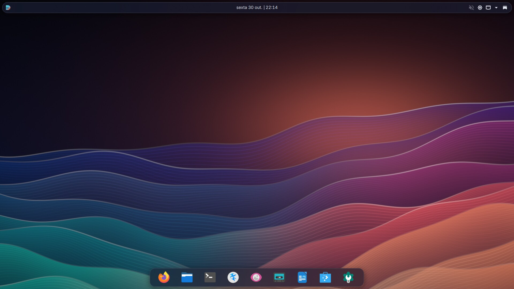
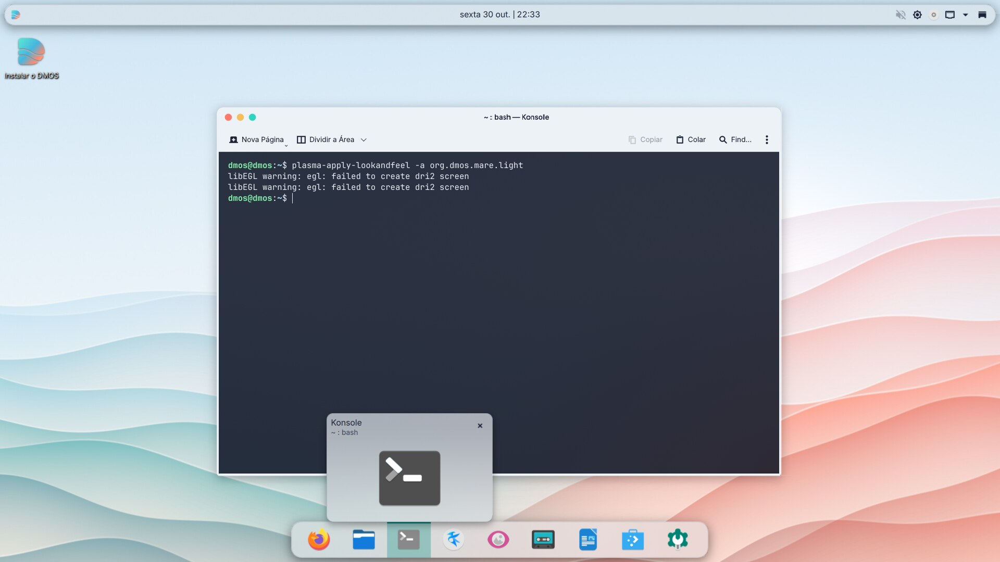

Instalador mais legível
Na página de partições, a legenda ficava escura sobre fundo escuro. Agora lê-se sobre uma faixa clara.
Versão 1.1 · "Maré" · Debian 13 trixie
O DMOS é uma distribuição baseada no Debian 13, com KDE Plasma 6 e uma identidade visual desenhada de raiz, do menu de arranque ao ambiente de trabalho. Tudo gerado a partir do código, sob licença livre.
ISO de 2,8 GB · BIOS e UEFI · alojada na SourceForge


Vídeo
Do menu de arranque ao ambiente de trabalho, com o assistente e o painel DMOS Hub.
Tour da versão 1.1
O que o DMOS acrescenta, o que traz incluído e, com franqueza, o que ainda lhe falta. Com legendas em inglês.
Novo na 1.1
O Flathub vem ligado de origem, o assistente ganhou uma página com aplicações populares e o instalador ficou mais legível. Tudo testado no VMware. Ler as notas de versão.
Um novo passo no assistente Bem-vindo ao DMOS sugere aplicações do Flathub. Cada uma abre no Discover, onde vê os detalhes e a licença antes de instalar.
Não precisa de comandos no terminal: o Discover mostra milhares de aplicações do Flathub logo no primeiro arranque. A ISO traz o catálogo do Flathub, por isso as aplicações aparecem antes da primeira atualização, que o Discover faz sozinho.
Na página de partições, a legenda ficava escura sobre fundo escuro. Agora lê-se sobre uma faixa clara.
A 1.1 foi testada no VMware Workstation, com aceleração 3D: a sessão de demonstração arranca em menos de um minuto, com a resolução ajustada à janela e som. A instalação completa e o sistema instalado também foram verificados.
Experiência DMOS
Um assistente para a primeira sessão e um painel no ambiente de trabalho com a hora e as notícias que escolher. Tudo em português de Portugal.
Na primeira sessão abre-se um assistente em vidro. Pode voltar a ele quando quiser, a partir do menu de aplicações.
Um painel à direita do ambiente de trabalho junta as últimas notícias das fontes que ligou, intercaladas, com a hora de cada uma. Um clique abre o artigo.
Privado por omissão. Nenhuma fonte vem ligada, e só as que ligar são contactadas.
Os ecrãs de bloqueio e de "Sair", que no Debian ficavam em inglês, estão traduzidos. As traduções em falta ficam em /usr/local/share/locale e não substituem os ficheiros dos pacotes.
Identidade visual
Cada ecrã que vê ao usar o DMOS tem o mesmo desenho. As peças são geradas por scripts no repositório, por isso podem ser revistas e alteradas como qualquer outro código.
Ondas procedurais em 4K, em versão clara e escura, geradas em Python.
art/gen_wallpaper.py
Esquemas de cores, estilo translúcido, decoração de janelas e cores do Konsole.
art/gen_theme.py
Uma disposição limpa, com relógio ao centro e as aplicações principais à mão.
look-and-feel/org.dmos.mare.dark
Tema do GRUB próprio, para BIOS e UEFI, com as entradas em português e inglês.
bootloaders/grub-pc
Um ecrã Plymouth com o logótipo, para o tempo entre o menu e o início de sessão.
plymouth/themes/dmos
Ecrã do SDDM e o instalador Calamares com a marca e as cores do DMOS.
sddm/themes/dmos · calamares
"Bem-vindo ao DMOS" e o painel com a hora e as notícias, escritos em QML.
dmos/welcome · plasmoids/org.dmos.hub
Português de Portugal nos ecrãs de bloqueio e de sair, sem tocar nos pacotes.
0530-dmos-pt-translations.hook.chroot
Cada peça vem de um ficheiro que pode ler, alterar e compilar.
github.com/diogomadail1000-ship-it/DMOS
Fontes Inter e JetBrains Mono · Ícones Papirus · Cursor Bibata
Galeria
Capturas do sistema a correr numa máquina virtual. Clique numa imagem para a ampliar.
O que vem incluído
Um conjunto de aplicações para o dia a dia, em português, com o Flathub ligado para instalar o resto.
Vídeo · Depois de instalar
Sete programas que recomendamos, do email aos jogos. O vídeo mostra como ativar o Flathub, um passo que no DMOS 1.1 já não é preciso.
Dicas em vídeo
Atalhos do KDE Plasma 6 que poupam tempo, e duas dicas bónus.
Vídeo · Personalizar
Oito ajustes do KDE Plasma 6 para o dia a dia, e como repor o visual original.
Experimentar
A sessão live entra sozinha com o utilizador dmos. O assistente Bem-vindo ao DMOS abre-se sozinho. Para instalar, use o ícone Instalar o DMOS no ambiente de trabalho.
Tutorial em vídeo
Do download ao primeiro dia, em menos de três minutos.
Tutorial em vídeo
Crie a máquina virtual, experimente e instale o DMOS sem tocar no seu disco.
Tutorial em vídeo
O Hyper-V já vem no Windows Pro, Education e Enterprise. Máquina de geração 2, Arranque Seguro desligado, e o DMOS a correr.
Descarregue a ISO do DMOS 1.1 (2,8 GB) na SourceForge. Para confirmar que chegou inteira, compare-a com o SHA256SUMS. Também a pode compilar a partir do código.
Tipo Linux/Debian 64 bits, pelo menos 4 GB de RAM e 2 CPUs. Recomendados o VMware Workstation, com aceleração 3D, e o Hyper-V (geração 2, Arranque Seguro e memória dinâmica desligados).
VirtualBox: não recomendado. O DMOS fica muito lento com as definições de origem. Se só tiver o VirtualBox, use VMSVGA com aceleração 3D e 128 MB de vídeo e escolha a sessão Plasma (X11) no ecrã de entrada.
Grave a ISO com o Rufus em modo DD, ou com o balenaEtcher. A gravação apaga o conteúdo da pen.
Estado
A partir da 1.1, os testes são feitos no VMware Workstation, com aceleração por hardware e 3D. A 1.0 foi testada no QEMU. A 1.1 publicada foi ainda instalada no Hyper-V, onde corre bem.
| Teste | 1.1 · VMware (UEFI) | 1.0 · QEMU (BIOS e UEFI) |
|---|---|---|
| ISO até ao ambiente de trabalho (Wayland) | Sim | Sim |
| Instalação completa e arranque do sistema instalado | Sim | Sim |
| Menu de arranque com o tema | Não verificado | Sim |
| Assistente e aplicações do Flathub no Discover | Sim | Não existia |
| Resolução automática e som (ferramentas do VMware) | Sim | Não se aplica |
A instalação no VMware foi feita com a primeira compilação da 1.1; a compilação publicada só acrescenta o catálogo do Flathub, testado na sessão de demonstração. Na 1.0 também foram verificados o tema claro, a entrada "Try DMOS (English)", o Firefox e o Dolphin. No Hyper-V (geração 2, Arranque Seguro desligado), a 1.1 publicada arrancou e foi instalada até ao fim. No VirtualBox arranca, mas a sessão fica demasiado lenta com as definições de origem. Em hardware real, a 1.1 arrancou da pen e correu num HP Omen de 2017; um Toshiba Tecra R840 de 2011 só não arrancou com a pen gravada em «Large FAT32» pelo Rufus, formato que as BIOS antigas não leem; em modo DD não há problema.
apt.Compilar a ISO
O script cria uma instância WSL 2 própria, dmos-builder, sem tocar nas outras. Precisa de cerca de 20 GB livres e demora perto de 20 minutos, mais a descarga dos pacotes na primeira vez.
git clone https://github.com/diogomadail1000-ship-it/DMOScd DMOS.\build.ps1.\build.ps1 cleanwsl --unregister dmos-builderPara desenvolver o tema sem compilar a ISO, veja scripts/dev_preview.sh no README.
O código e os temas estão sob a GPL-3.0-or-later. O código-fonte de todos os pacotes da ISO está na SourceForge, ao lado da ISO. O wallpaper "Maré" está sob a CC BY-SA 4.0. O Debian, o KDE Plasma e as restantes aplicações mantêm as licenças próprias.
Ajuda
O assistente do site responde na hora com as perguntas frequentes do projeto. Se não souber, leva a pergunta para as Discussões, onde o assistente da comunidade responde em minutos e um humano acompanha.
Olá! 🌊 Pergunte-me como descarregar, experimentar ou instalar o DMOS. Se eu não souber, levo a pergunta para a comunidade.
As respostas vêm das perguntas frequentes do projeto e são dadas no seu navegador. Nada é enviado a terceiros.